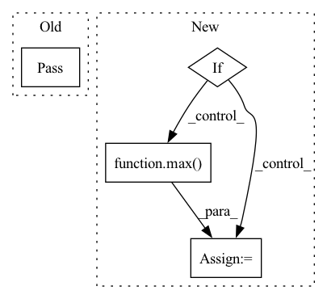

Pattern ID :8572
Before Change
raise NotImplementedError("Loss function {} not found".format(self.loss_func))
def set_auto_batch_epoch(self, n_data):
pass
@dataclass
class Model:After Change
):
assert n_data >= 1
log_data = int(np.log10(n_data))
if self.batch_size is None:
log2_batch = 2 * log_data - 1
self.batch_size = 2 ** log2_batch
self.batch_size = min(max_batch, max( min_batch, self.batch_size) )
if self.epochs is None:
datamult = 1000.0 / float(n_data)
self.epochs = datamult * (2 ** (3 + log_data))In pattern: SUPERPATTERN
Frequency: 3
Non-data size: 4
Instances Fragment ID: 29731565
Project Name: ourownstory/neural_prophet
Commit Name: a35a38f69de922bf131afe3171edbe1870dca639
Time: 2020-12-04
Author: ourownstory@users.noreply.github.com
File Name: neuralprophet/configure.py
M Class Name: Train
N Class Name: Train
M Method Name: set_auto_batch_epoch(4)
N Method Name: set_auto_batch_epoch(2)
M Parent Class:
N Parent Class:
M File Name: neuralprophet/configure.py
N File Name: neuralprophet/configure.py
M Start Line: 131
M End Line: 132
N Start Line: 132
N End Line: 147
Before Change
def is_in(self, other): pass
def pad(self): pass
def shift(self): pass
def scale(self): passAfter Change
x_2 = self.x_2 + right
y_2 = self.y_2 + bottom
if safe_mode:
x_1 = max( 0, x_1)
y_1 = max(0, y_1)
return self.__class__(x_1, y_1, x_2, y_2)
Fragment ID: 29731564
Project Name: layout-parser/layout-parser
Commit Name: 9b043f34f06cc77957a6dc60f71b698af0eff7ac
Time: 2020-06-13
Author: 22512825+lolipopshock@users.noreply.github.com
File Name: src/layoutparser/elements.py
M Class Name: Rectangle
N Class Name: Rectangle
M Method Name: pad(6)
N Method Name: pad(1)
M Parent Class: BaseLayoutElement
N Parent Class: BaseLayoutElement
M File Name: src/layoutparser/elements.py
N File Name: src/layoutparser/elements.py
M Start Line: 175
M End Line: 175
N Start Line: 176
N End Line: 188
Before Change
def is_in(self, other): pass
def pad(self): pass
def shift(self): pass
def scale(self): passAfter Change
if left or right:
warnings.warn(f"Invalid padding right/left for a y axis {self.__class__.__name__}")
if safe_mode:
start = max( 0, start)
return self.__class__(start, end, axis=self.axis,
img_height=self.img_height, img_width=self.img_width)
Fragment ID: 29731567
Project Name: layout-parser/layout-parser
Commit Name: 2dc499104b1587b962f990dc470aa20f99e49272
Time: 2020-06-13
Author: 22512825+lolipopshock@users.noreply.github.com
File Name: src/layoutparser/elements.py
M Class Name: Interval
N Class Name: Interval
M Method Name: pad(6)
N Method Name: pad(1)
M Parent Class: BaseLayoutElement
N Parent Class: BaseLayoutElement
M File Name: src/layoutparser/elements.py
N File Name: src/layoutparser/elements.py
M Start Line: 128
M End Line: 128
N Start Line: 129
N End Line: 146